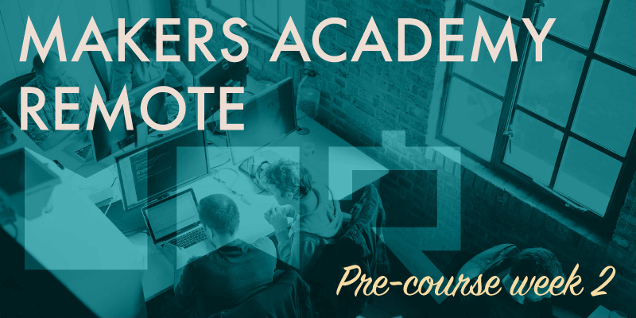

Makers Academy promote a thirty minute rule, which states that if you're struggling on a problem for longer than thirty minutes without making progress then you should begin to seek help. This week I definitely learned how important that rule is.
Lots of Ruby
The work this week has been fairly straightforward, to complete chapters 1 and 2 of Ruby Kickstart, a series of tutorials created by Josh Cheek. The version we've been following has however been forked and modified a decent amount by Makers Academy. The tutorials come in the form of the original narrated videos by Cheek, with accompanying notes, and also a series of challenges. The challenges provide instruction as to how your solution needs to function, and you're required to code your solution within the Ruby files provided. A series of RSpec tests are also provided, and after completing each challenge you can execute a rakefile (an automated list of tasks) to run those tests, which will inform you as to how well your code solves the challenges. For really desperate situations the final solutions were also provided, but of course you'd only be cheating yourself to check unnecessarily.
The Ruby Kickstart challenges had been linked by Makers Academy to Travis CI, a Continuous Integration system that automatically checks the code against a given set of criteria each time it's pushed to a GitHub repository. Each time a completed challenge was pushed to GitHub, the CI would kick in and check whether you'd completed all required challenges yet, providing Makers Academy with an easy way to chart each student's progress. When pushing the entire repo after each of the completed challenges 1-19 the commits were rejected by Travis CI as incomplete, but upon completing the 20th and final challenge (of the first 2 chapters) a green tick would signify that all 20 challenges had been completed, and the commit was accepted.
The initial challenges were quite simple, and most students seemed to find the chapter 1 challenges easy enough to work through. The instructions were clear, and the features of the Ruby language which were required to complete the challenges were explained well within the chapter 1 video. Then came chapter 2.
Every student that I know of found chapter 2 much more difficult to complete. We began with the chapter 2 video, which again didn't seem too difficult to follow. Then came the challenges, which began where chapter 1 finished, and which were initially solvable using only what had been taught in the video. Soon however the challenges began to get much more difficult, and equally less well explained. The main problem that we found was that the explanations to some of the later challenges left a lot open to interpretation, to the extent that some challenges appeared to be unsolvable without first checking the solutions. The RSpec test would expect a very particular solution in order to pass, and by eventually peeking at the answers to some challenges (I had to peek on three separate occasions) it became clear that either the solution had to be coded in a very particular way that simply wasn't communicated to us through the instructions, or that features of the Ruby language were required which were never explained to us during the video. This experience makes me suspect that the week's work was intended as one big lesson in learning to ask for help, because some of the challenges were actually pretty unsolvable until after seeking further information (the solutions).
Weekend challenge
The challenge set for the weekend was to complete enough CodeWars katas to earn 40-50 points. The easiest of katas are worth 1 point each, climbing to 20 points each for the very hardest katas, although these harder katas should be far too difficult for anybody with our current level of experience to complete. The 40-50 points target was fairly easily achievable, but due to the fact that I was sticking to the easier katas it took almost the entire weekend to reach that number of points.
Being a part of the January cohort means that our pre-course actually began two weeks earlier than usual, leaving room for a two week break in the middle over Christmas. My opinion, and seemingly the opinion of others on Slack, is that this two week break will provide us some much needed time to dig in and study the concepts that we're struggling with a little further. While the instructions from Makers Academy were to relax and enjoy the Christmas break, I suspect that not many of us will take the two weeks off entirely.